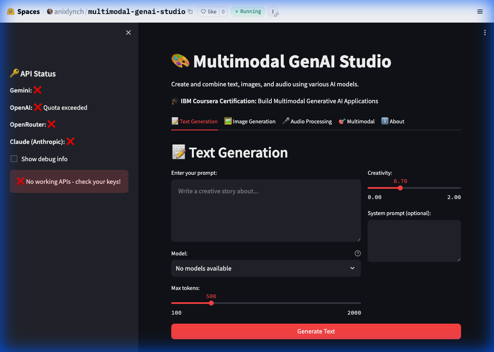
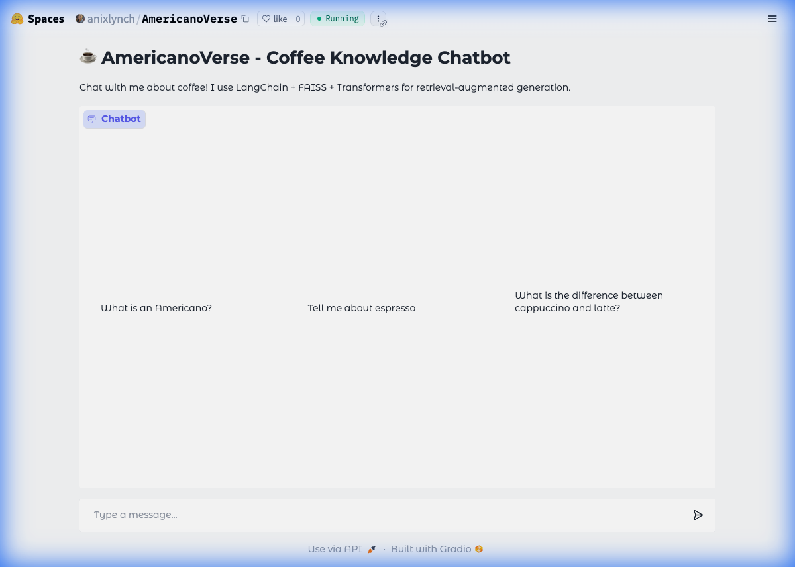
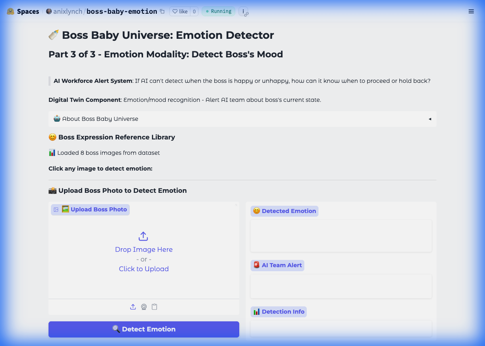
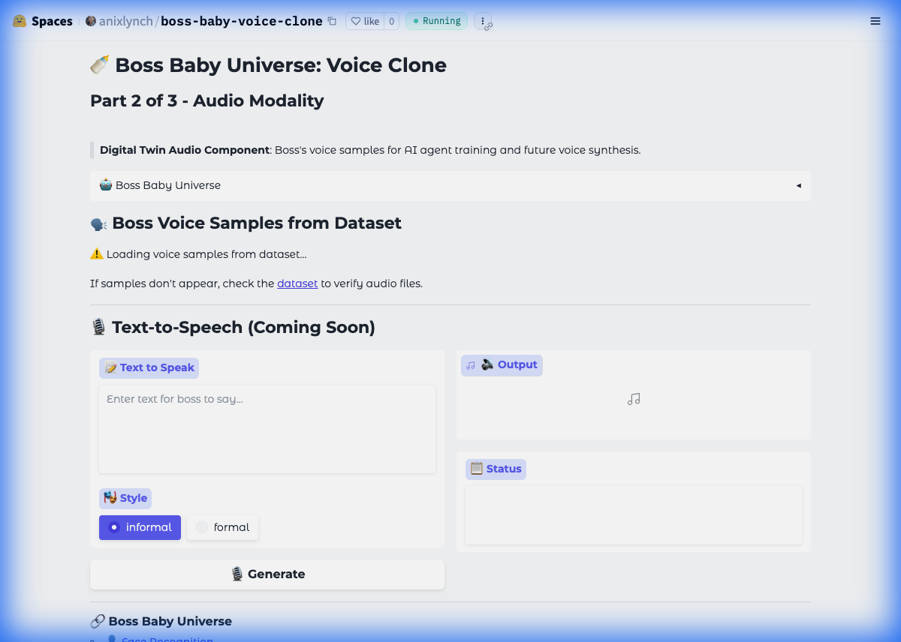
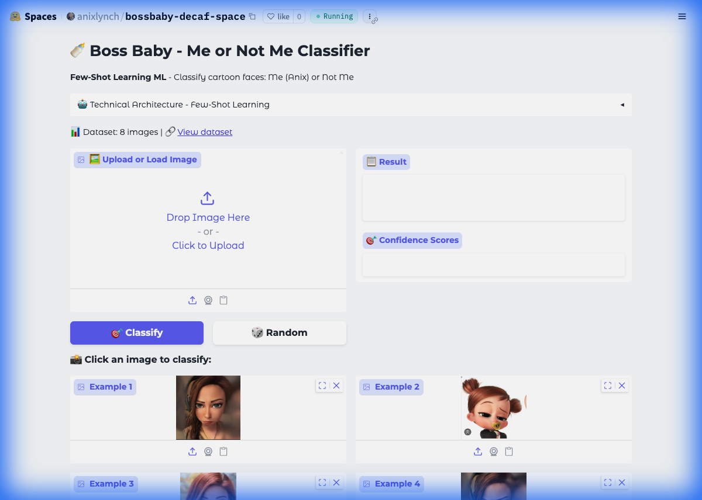
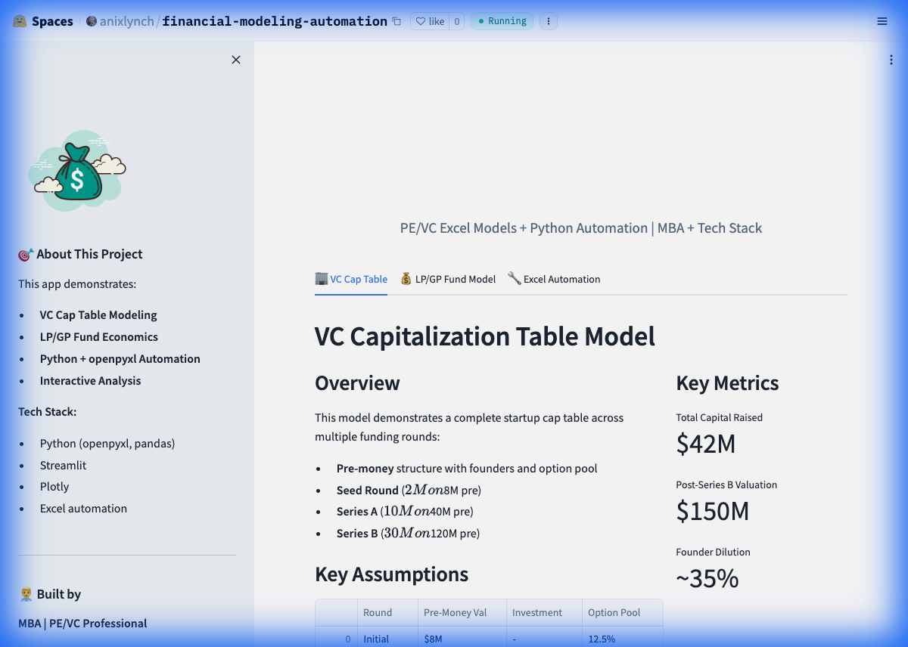

🎨 Multimodal GenAI Studio
Multi-modal AI application using PyTorch and HuggingFace Transformers for
text, image, and audio generation
Deep Learning • PyTorch • Transformers • Multi-modal AI • LLM Integration •
GPU Computing • Gemini • DALL-E • Whisper
View Live Demo →

☕ AmericanoVerse
Coffee knowledge chatbot powered by RAG (Retrieval Augmented Generation)
RAG • Vector Database • FAISS • LangChain • NLP • Embeddings • Sentence
Transformers • PyTorch
View Live Demo →

😊 Boss Baby Emotion Detector
Detect emotions from images using pre-trained models
Gradio • HuggingFace Datasets • Image Processing • Pillow • Python
View Live Demo →

🎙 Boss Baby Voice Clone
Audio sample player with voice demonstrations
Gradio • HuggingFace Datasets • HuggingFace Hub • Audio Processing • Python
View Live Demo →

🍼 Boss Baby Classifier
Image classification demo using the bossbaby-decaf model
Gradio • HuggingFace Datasets • Image Processing • Model Deployment • Python
View Live Demo →

💰 Financial Modeling Automation
PE/VC financial modeling with automated Excel generation
Python • Data Analytics • Pandas • Plotly • Excel Automation • Gradio •
openpyxl
View Live Demo →